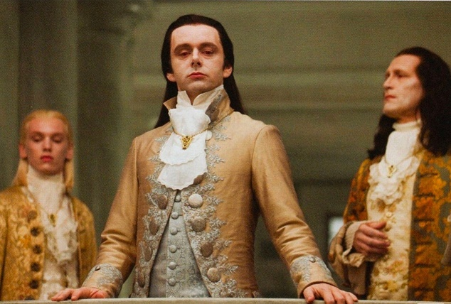

Ви думаєте, що лише дівчата “визбируються” на побачення, а от і ні! Для чоловіків, яких еволюція
створила, щоб бігати за мамонтами, це також болюча тема.
Це ж треба ідеально вибрити морду-лице, що само по собі подвиг, а ще вискубати волосся з носа (може краще
відростити бороду, як у дядька Євгена?), а про інші (волохаті) місця я взагалі мовчу.
Та ще й треба сорочку прасувати (бо у футболці, це якось не те). Так так! Вам не почулося саме прасувати, ну типу праскою на прасувальній дошці і всяке таке, бо як завжди натягнути і розправити плечі, а потім надути пузяку, щоб розладити “зморшки” на сорочці вже не підійде, тобто не цього разу.
Гм цікаво, а може тому переважна більшість чоловіків після весілля поправляються – це їх “підступні”
жінки, спеціально, розгодовують, щоб не треба було прасувати їхній одяг….
Мабуть через це я до сих пір не жонатий, бо боюсь на підсвідомому рівні поправитися?
Тааак, муть треба відписуватися від .ютюб-каналів по самоаналізу!
І от, коли я увесь такий нарЯдний, красІвий, “замаренований” парфумами виходжу з під’їзду,

до мене підходить сусідка зі словами: “О! Добре що ти вийшов! А, то моїх вдома нема, а у мене у машині
купа
важких сумок і спина хвора, а п’ятиповерхка без ліфта…”
Ну. Ви зрозуміли...
От і довелося, не з власної волі, здійснити незаплановане кардію. Щоб не запізнитися на перше побачення
працювати довелося швидко. Активна фізична праця плюс серпнева спека і через 15хв. я з накрохмаленої фіфи
перетворився на спітнілого вантажника, який цілу зміну розгружав фури.
Повертаюся у квартиру дивлюсь на годинник, на якому великими літерами написано: “Суши весла, ловелас”,
пишу повідомлення, що трохи запізнюся і що з мене “кава і до кави” у відповідь отримую: “Я стільки кави
не вип’ю скільки тобі доведеться ставити за запізнення”. Добре хоч панянка попалася з хорошим почуттям
гумору.
Вже без ентузіазму заходжу у ванну дивлюся на свою спітнілу, але все ще добре вибриту мордочку.
Нашвидкуруч здійснюю рятувальну гігієнічну операцію.
І як вишенька на торті - це капець моєму зовнішньому вигляду! Моя “броня”, яку я як лицар перед турніром
натирав до блиску перетворилася у… ну ви розумієте.
Сорочка!!! Я ж її так довго прасував!!! ТРЯСЦЯ!!!
Нехай пробачить мене панянка, та двічі за день прасувати сорочки це вже занадто. Я ж чоловік!
Матінка-природа мене готувала до боротьби з шаблезубим тигром, а не для наведення марафету… Хоч, зараз я
саме так і виглядаю ніби зустрівся з цим самим тигром.
Зрештою, це з перше побачення, я ж її, навіть, не знаю, чого я так хвилююся.
Перебравши свій гардероб,
добре хоч він уже був розкиданий на ліжку, кріслах і дверцятах шафи, вибрав біль-менш свіжу футболку,
джинси у тон і побіг у кафе, де, сподіваюся мене ще чекають, тренуючи, по дорозі погляд котика зі Шрека у
надії, що це спрацює.